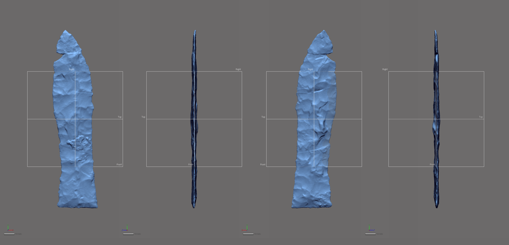
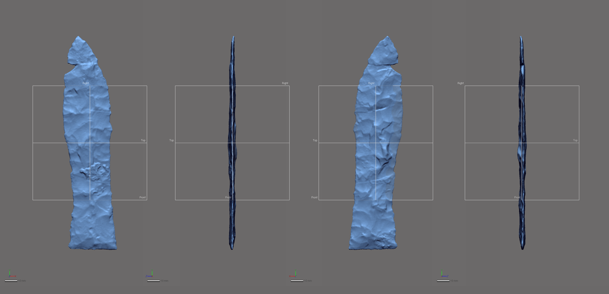
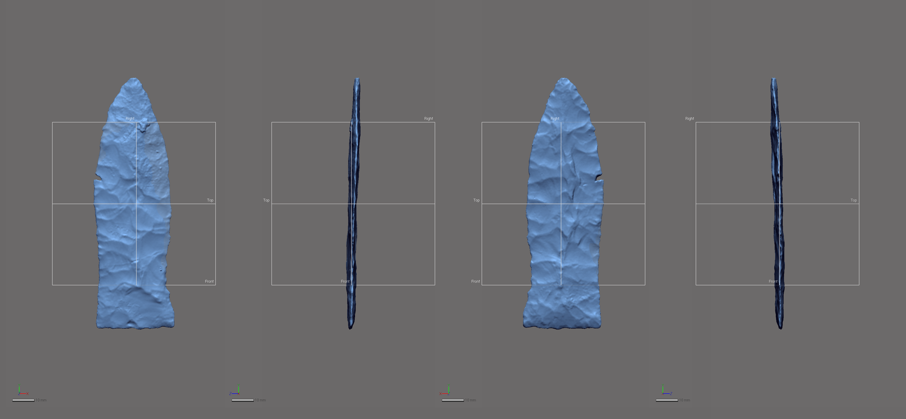

knitr::include_graphics('images/41ce19-4078-8-unmodeled.png')

Two Gahagan bifaces, both from the George C. Davis site (4078-8, and 4078-72), were missing small sections of the blade along the lateral edge. This analysis limited the inclusion of specimens with missing data to those where the area of missing data was smaller than a dime (10-cent coin in the US), ensuring that modeling was kept to a minimum.
Modeling was completed in Geomagic Design X (Build Version 2020.0.4 [Build Number: 15]). In the previous studies (Selden Jr., Dockall, and Shafer 2018; Selden Jr., Dockall, and Dubied 2020), modeling occurred in advance of alignment, which used the auto3dgm package in R (Boyer et al. 2015; R Core Development Team, 2021). In this iteration, modeling still occurs first, followed by a novel method for assigning the front and back faces of each specimen. Details associated with that method are included in the next chapter. Following alignment, these specimens were landmarked using the same landmarking protocol as the unmodeled bifaces.
In both cases, the area of highest concern was that of the lateral edge. To ensure that the fit followed the existing contour, the area was first cut and cleaned, then bridges were constructed that enlisted variable curvature, following the existing curvature of the edge. Once fitted with the bridge, the remaining holes on either side were filled following those protocols set forth in (Selden Jr. 2017).
The images that follow include a before and after modeling image of each biface, illustrating the area of the biface that was missing, and the subsequent model that was used in the geometric morphometric analysis. In the case of 4078-8, a single semilandmark was included in the modeled area. No semilandmarks were placed in the modeled area of 4078-72.
knitr::include_graphics('images/41ce19-4078-8-unmodeled.png')
knitr::include_graphics('images/41ce19-4078-8-modeled.png')
knitr::include_graphics('images/41ce19-4078-72-unmodeled.png')
knitr::include_graphics('images/41ce19-4078-72-modeled.png')